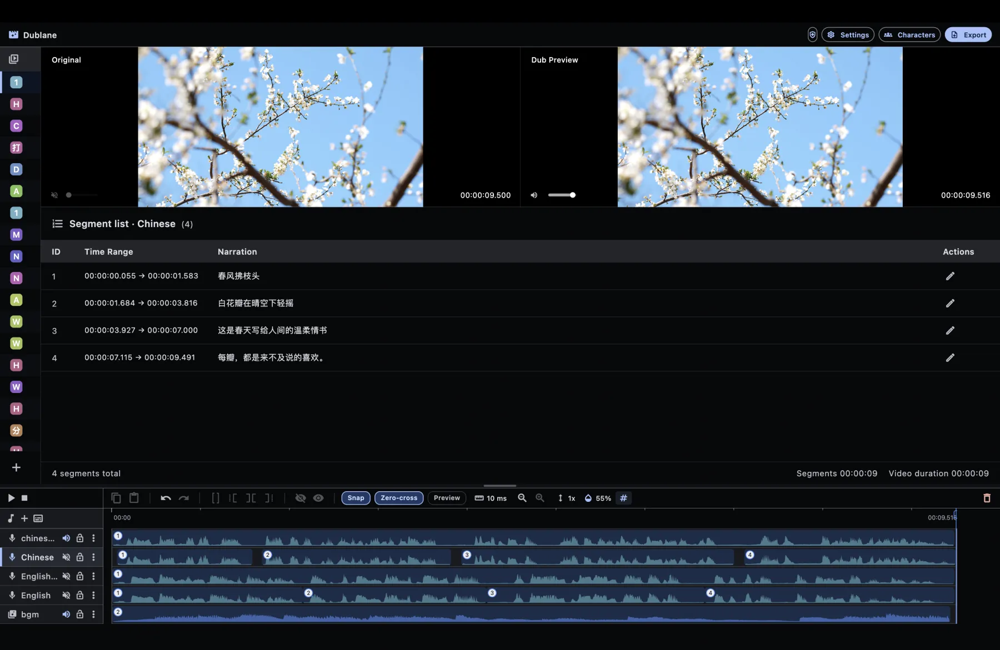
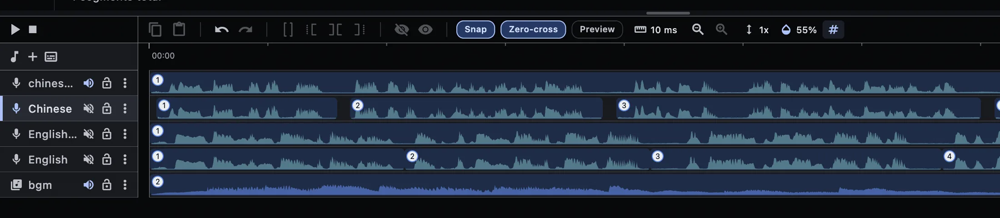

成品
同一段画面，四种交付形态。下面的视频都是 Dublane 在本机导出的真实文件。
为网页加载速度，页面上的成品已转为 1080p；Dublane 导出的原始文件为 3840 × 2160。
原始素材（无声）
3840 × 2160 / 25 fps / 9.52 秒，音轨是数字静音。上面的四个成片全部由 Dublane 在本机生成： 解说是合成的人声，BGM 是单独一条轨道，字幕来自片段表里的文案。
4K 源
0 dB 静音轨
导出为 1080p 网页版
制作过程
六个步骤，全部在 Dublane 主界面里完成。
1
导入无声视频
点左上角「添加视频」，选中这段 4K 樱花空镜。Dublane 原地读取文件，生成缩略图、波形和时长信息。
2
新建旁白轨
在时间线左侧点「+」新建一条旁白轨，起名「中文旁白」。旁白轨和普通配音轨一样，可以整轨静音、锁定、改音量。
3
按画面写解说
在片段列表里按画面节奏切 4 段，逐段写解说文案并设置起止时间：「春风拂枝头」「白花瓣在晴空下轻摇」「这是春天写给人间的温柔情书」「每瓣，都是来不及说的喜欢。」
4
选音色并生成配音
打开片段编辑器挑一个音色试听，确认后生成。生成完成的旁白会带着波形回到旁白轨上，可以直接拖动、裁剪、微调。
5
加一条 BGM 轨
再新建一条轨道导入背景音乐，把音量压在人声之下铺满全片。旁白和音乐分开，改文案或调音量都不用重做另一边。
6
导出 4 个成品
导出对话框里选「视频」；字幕可选烧录进画面或另存 SRT。先导出中文版，再把旁白轨换成英文文案，导出英文版 —— 一次工程，四个成品。

轨道怎么搭
这条工程一共 5 条轨道，每条各司其职 —— 靠轨道的监听开关决定谁进混音。

- 原视频音轨：素材自带的音轨，本例里是静音；可以整轨静音，不参与混音
- Chinese（中文旁白轨）：本案例的主角，4 段解说；导出中文成品时打开监听
- English…（英文旁白轨）：同一段解说的英文版，导出英文成品时打开监听、导出中文成品时静音
- bgm（BGM 轨）：整段铺底的背景音乐，音量比人声低，导出时一直参与混音
- 片段 ID 圆点：打开工具条的「#」开关，每个片段都会标出编号，方便和片段表一一对应
- 吸附：工具条可以选「Zero-cross」吸附，片段首尾会贴到波形过零点，拼接时听感更自然
为什么要分轨：旁白和 BGM 分开之后，改一句文案只重新生成那一个片段；调整背景音乐音量也不会影响已经做好的配音。
字幕怎么来的
字幕不需要另外写 —— 内容直接来自片段表。
- 内容来源：原文、译文，或两者同时显示；本案例用的是旁白轨上的文案
- 两种输出：烧录进画面（固定在成片里），或导出独立的 SRT / ASS 文件，也可以两者都要
- 样式：字号、颜色、描边、背景、位置（底部 / 居中 / 顶部）都在导出窗口里调
- 字体：可选内置中文字体，也可以在导出窗口点「添加字体」导入自己的 TTF / OTF / TTC
- 所见即所得：导出窗口里的预览帧按最终输出分辨率渲染，缩放方式和黑边都与成片一致
可复用场景
同样的搭法，可以直接搬到这些内容上。
产品宣传片
旅行 vlog
教程录屏解说
展厅与房产导览
课程与知识科普
活动回顾短片
无障碍旁白版本
一条通用规律：画面负责讲故事，旁白轨负责说清楚，BGM 轨负责定情绪。把三者分成独立的轨道，任何一个想改，都不用重做整条片子。